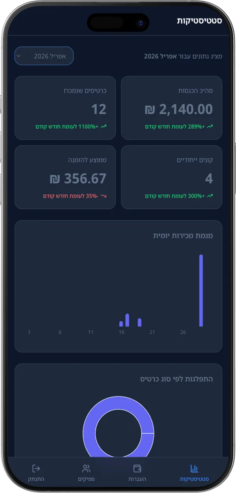
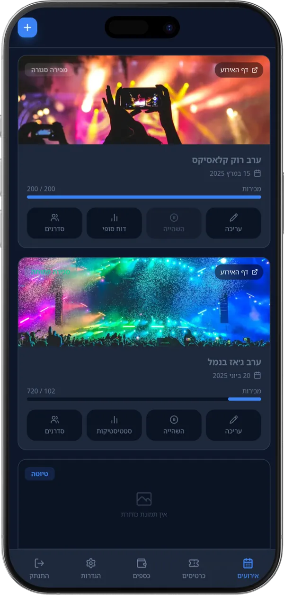
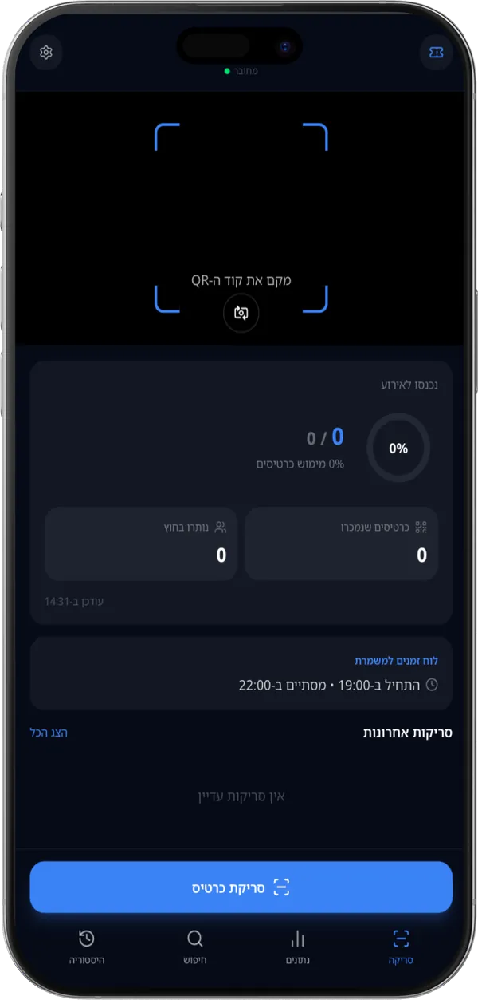

Evently
מכירת כרטיסים, חשבוניות וכניסה לאירועים
ההחלטה
הכניסה לאירוע היא הרגע שהכי אסור לו להיכשל.
מכירת כרטיסים יש בכל מקום. מה שמפיל ערב זה תור בכניסה. לכן מסך הסריקה קיבל הכי הרבה תשומת לב: מצלמה אחת, תשובה ברורה תוך שנייה, והתרעה מיידית על כרטיס שכבר נסרק. המכירה, החשבוניות והדוחות נבנו סביבו.


